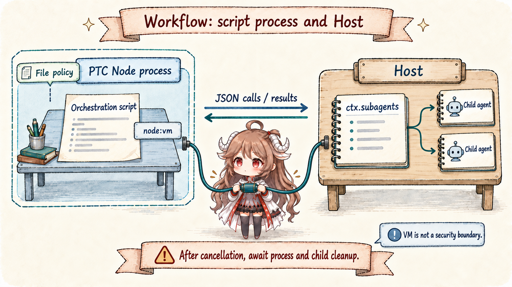

“Open several agents in parallel” sounds like one call option. It actually chooses at least six things: whether a child sees parent history; who owns cancellation and disposal; whether output returns synchronously, as a notice, or through durable mail; whether dialogue can continue; where concurrency and depth stop; and who coordinates concurrent workspace mutations.
DSH answers with multiple seams, not one enormous AgentManager. ctx.subagents unifies providers and child lifecycle. ctx.workflowEngine executes model-written orchestration. Ralph packages a fixed sequential policy as an ordinary tool. Experimental ctx.agentTeams layers durable roster, mailbox, and task DAG over continuable children.
Reading contract.After this chapter, you should be able to explain the sole history difference between spawn and fork; why fork stops at the last turn/end; who closes one-shot runs versus continuable Activations; why sendMessage() and settlement notice cannot merge; what PTC workflow isolation provides and never provides; and why Ralph and Team are not merely serial and parallel versions of one feature.
Evidence boundary.This chapter is pinned to ddefc45. Experimental Team lives under packages/experimental and requires explicit opt-in; it is not a stable base-bundle collaboration protocol. toolFilter and shared-cwd policy are not security boundaries either: external processes and Bash can bypass coordination.
1. One provider seam, several orchestration consumers
1.1 SubagentRuntime unifies start contracts, not implementations
The SubagentRuntime registers named providers. start(name, request) publishes a one-shot run; startContinuable(spec) creates a child that accepts later dialogue. sendMessage(), interrupt(), and discovery use Session identities. Messages require the exact live sender and a direct parent/child relationship; interruption admits an authorized ancestor. External ACP and SDK providers may execute elsewhere, so a common contract does not imply a local child Session for every route.
subagent and subagent_fork select a provider directly. workflow and ralph create a WorkflowRun, execute orchestration in a PTC process, and call the same subagent service through the Host. Experimental Team adds its own durable roster, mailbox, and task coordination over continuable providers.
1.2 Depth, policy, and capability freeze before child creation
Child headers retain parentSession and monotonic delegationDepth. The Host setting defaults maxDepth to 1, so tool-subagent permits only direct children when it inherits that setting. Explicit tool configuration overrides it; 0 disables delegation through inheriting tools, while provider-managed leaves depth to an external provider. The tool samples the current default on each delegation, but this is not a global limit on every call path: ctx.subagents.start() only validates the cap supplied by its caller, and PTC startChild supplies none. Resume cannot lower recorded depth to impersonate a root. Requested capabilities must be supported before a child is created.
In-process delegation pins approval to never when the service exists and captures parent permission state before its first await. An explicit sandbox override is logged with source: delegation; Auto / Full access permission/preset identity is also inherited so stale fork values cannot win. Deployment sandbox defaults are not copied. This permission snapshot differs from optional toolFilter, which controls tool visibility and cannot replace file confinement or approval checks.
2. spawn and fork differ only by seed
2.1 Spawn starts empty; fork copies through the last completed turn

spawn passes no seed; the child sees only the standalone task. fork passes the parent's contiguous completed-turn prefix. The parent turn that calls the subagent is still open: its assistant tool call has neither result nor turn/end. Copying that raw tail would create an unbalanced child Session.
Fork therefore cuts at the newest turn/end. With no completed parent turn, it degenerates into fresh spawn. The seed is a one-time snapshot; later parent events do not stream into the child.
2.2 History inheritance is not scope or authority inheritance
Both paths share the in-process driver and create an independent child scope. applyChildComposition() joins the parent’s currently composed preset before applying the child persona and tool restriction. A history seed does not copy transient parent registrations or restrictions; preset composition and permission capture are explicit, separate inheritance paths. Provider, model, and reasoning effort prefer the parent’s last logged request, falling back to creation options before the first request, while retaining configured maxTokens. A route change without an explicit effort clears the old route’s effort.
A fork on the same model route may reuse its inherited byte prefix. The base composition still selects continuable-background spawn and one-shot fork, and disables fork route selection. Continuable mode no longer necessarily adds a child-only report schema or system section ahead of history: it uses the shared send_message tool and may append return guidance to the new task. Presets may select continuable fork. Actual cache reuse still depends on the final byte prefix, tool definitions, and model route.
3. One-shot runs and continuable children have different owners
3.1 SubagentRun is the one-shot holder-owned boundary
Before start() fulfills, the provider owns all unpublished resources and must rollback and quiesce on failure. After fulfillment, the caller owns SubagentRun and must call dispose() on every result path. A local run id is the child Session id. Its result selects only the child's final non-empty assistant output or structured value, excluding fork seed and intermediate steps.
The foreground tool awaits result and disposes in finally. One-shot background delegates ownership to the generic Task runtime and returns a job id. Siblings may overlap in the maxParallelToolCalls rolling pool while results still commit in model-call order. Shared-workspace conflicts remain an orchestration responsibility.
3.2 Continuable ownership centers on durable Session and one Activation

startContinuable() returns { childId, messageId } when the initial prompt reaches the inbox—not when its turn starts or the message reaches the Session log. The continuation manager owns at most one process-local Activation. Running, waiting, and settled derive from Agent quiescence and owned children; an inactive child may cold-resume from persistence.
sendMessage() handles model-authored parent/child messages. A working target receives Steer at the nearest step; an idle target starts a turn, and only a direct child can cold-resume. Browser human input separately offers Queue or Steer; only Queue promises a later turn. interrupt() cancels the target’s current turn with keepInbox and preserves published descendants. A parked queue after interruption may need another waking send.
A model-authored message and an Activation settlement notice remain different facts. The former attributes content to its sender; the runtime owns the latter and reports completion, refusal, cancellation, or failure, including only nonempty final assistant text rather than injecting reasoning as a user message. The parent must not merge both into a child quotation or treat acceptance as a durable result. Ordinary continuable delivery has no cross-process durable parent mailbox or exactly-once guarantee.
3.3 Depth and resident capacity bound different things
maxActiveSubagents defaults to 8 and bounds the process-local resident pool shared through uninterrupted continuable parent links. Creation and cold resume reserve a slot before rebuilding an Agent. Waiting parents, pending inbox work, and stopping Activations still occupy slots. Capacity exhaustion rejects with ACTIVATION_LIMIT_REACHED instead of queueing, avoiding a parent that occupies a slot while waiting for a child to acquire it. One-shot and external runs are outside the pool; continuable children beneath a one-shot parent start a new pool.
startContinuable → { childId, messageId } // inbox acceptance receipt
sendMessage(child) → working: Steer; idle: start a turn
cold resume at capacity → reject; never silently queue
settlement notice → outcome + closing text; parent still verifies4. Workflow runs scripts in PTC while the Host owns children
4.1 Script is the control plane; Agents remain on the Host

The PTC workflow engine uses a fresh Node process per run, reusing PTC launch, transport, and file-sandbox providers. Scripts retain args and agent(), parallel(), pipeline(), phase(), and log(). Host bindings reach ctx.subagents; the Host keeps local child run handles while the guest exchanges JSON, not Agent objects. The engine requires a TypeScript PTC provider; Python compositions must disable these workflow consumers.
Values crossing the process boundary must be lossless JSON: functions, cycles, sparse arrays, exotic prototypes, non-finite numbers, and nested undefined reject. Default maxConcurrentAgents: 0 resolves from CPU, maxTotalAgents: 1000, and each parallel/pipeline call permits 4096 items. Requests may only lower the total cap. These are cooperative helper limits, not Host-enforced security quotas; PTC maxPendingCalls must also leave room for child startup, result waits, disposal, and progress.
4.2 File policy, cancellation, and cleanup protect different properties
The calling Session’s standing file policy and cwd govern the process. Its environment is empty; node:vm still shapes ordinary APIs, while actual file enforcement depends on the selected OS sandbox provider and does not restrict networking. The engine requests timeoutMs: null, with no overall elapsed deadline. The initial synchronous slice retains the default syncTimeoutMs: 5000; caller deadlines and abort signals still apply.
Cancellation immediately aborts the PTC process and pending or active children. A child published after cancellation must also be disposed. The caller’s dispose() awaits process settlement and child cleanup, without a separate abandonment timer. Execution failures resolve to stopReason: error, cancellation to cancelled; ordinary child failure gives the script null to handle. This is still not a durable workflow: restart does not resume intermediate script progress.
5. Ralph and experimental Team are different kinds of long-running work
5.1 Ralph uses sequential fresh children to discard conversational inertia

ralph is a fixed foreground workflow, not an agent-loop mode; shipped defaults disable it until explicitly enabled. Each round starts one fresh structured-output child with no parent seed. Immutable objective, round metadata, shared-workspace instruction, and the preceding bounded handoff form the new prompt. Defaults permit 256 rounds and 16384 serialized handoff characters.
A round reports continue, complete, or blocked; the terminal tool result is complete, blocked, or budget-limited. Completion and blocker are worker self-reports, not independent verification. Any ordinary child failure ends the run without retry. Workspace is the only long-lived shared fact source; uncommitted reasoning disappears with each child.
5.2 Team coordinates named, continuable, concurrent members in the Lead log
Experimental Agent Team makes the root Session id its implicit TeamId. Named teammates are continuable direct children. The Lead log retains team/member, team/message/queued/delivered, and revisioned team/task snapshots. Mail appends and flushes before delivery; task dependencies must remain a DAG.
Messages append and flush in the Lead log before Steer delivery. The mailbox records delivered only after the target Session durably contains the identity in pending inbox or history. Recovery retries queued-minus-delivered entries and deduplicates against target state. Queued means durably waiting; accepted means inbox admission; neither means the task has completed. The guarantee remains process-local retry plus target-Session de-duplication, not cross-process exactly-once. Members share one checkout; writeScopes warn about overlap but neither lock files nor authorize writes. Bash, formatters, and external writers still require coordination.
6. Engineering consequences of the multi-agent runtime
- Choose lifecycle before provider.Use one-shot for one answer and continuable for dialogue; do not treat background as an ambiguous third lifecycle.
- Delegate only for independent context.Perform one or two dependent actions directly; use workflow for genuine large fan-out.
- Fork completed facts only.Copying an open turn creates unbalanced tool history, and later parent changes never synchronize automatically.
- Visibility is not authority.toolFilter, prompt policy, and writeScopes cannot replace sandboxing, approval, or conflict control.
- Every holder owns quiescence.SubagentRun, WorkflowRun, Activation, and Team forest each has its own dispose/drain boundary.
- Do not confuse self-report with acceptance.Ralph complete, child reports, and settlement notices need parent or external evidence for quality.
Part VII returns to Cordis: how two read-only Inspect tools expose the runtime, how plugin_manager installs persistent profile bundles, and why accepted installation, profile persistence, and application on each runtime side are separate observations.
Source references
- subagent seam README and tool-subagent README: provider registry, one-shot/continuable lifecycle, depth, policy, and model-facing tools.
- spawn, fork, and shared driver: seed boundary, child scope, result, and disposal.
- workflow seam, PTC engine, and workflow tool: hooks, caps, JSON boundary, cancellation, and foreground collection.
- Ralph README: fresh rounds, structured handoff, budget, and limitations.
- experimental Agent Team README and tool adapter: durable roster, mailbox, task DAG, and model authority.